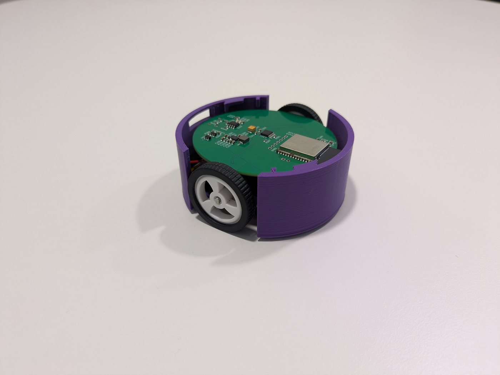
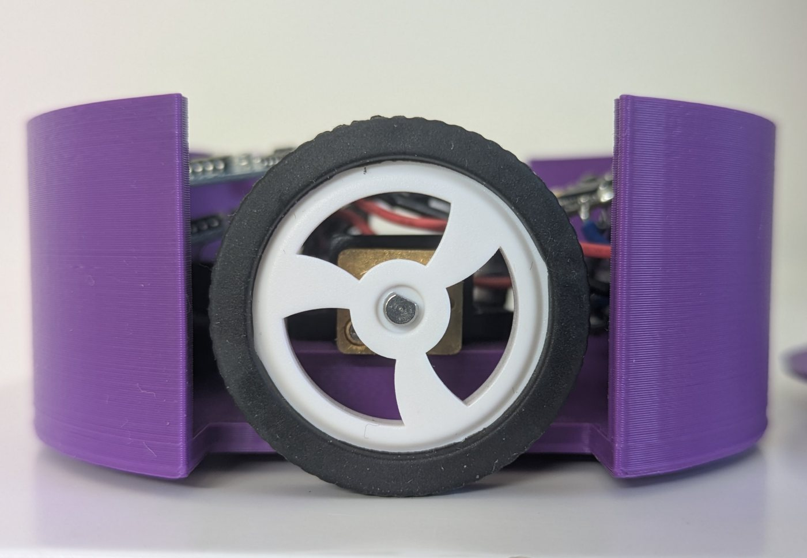
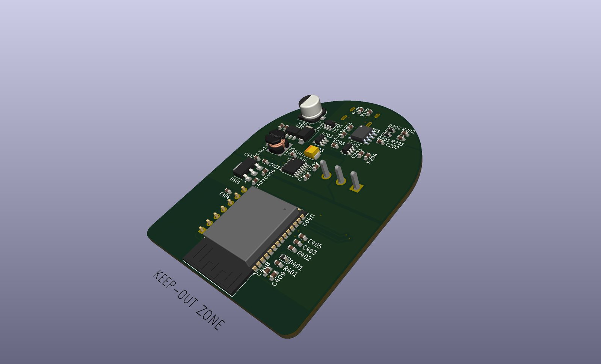
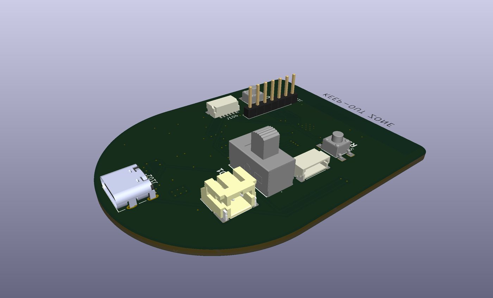
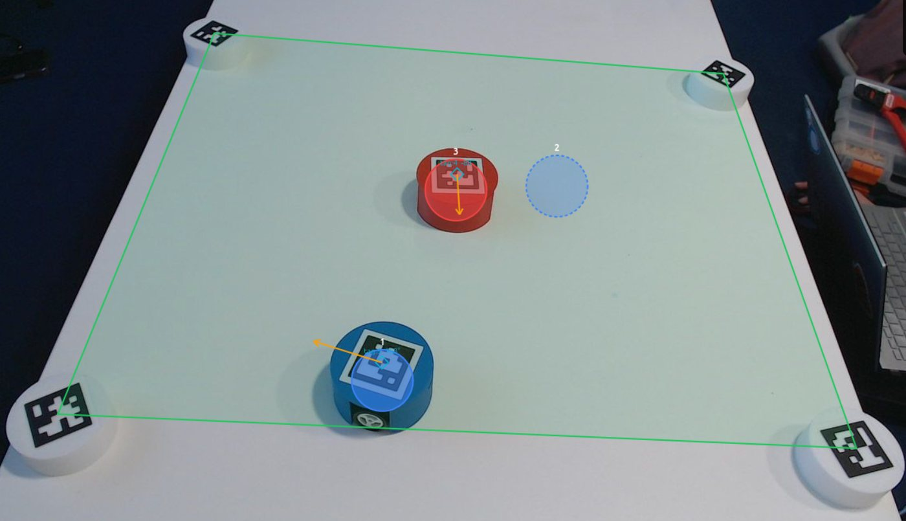
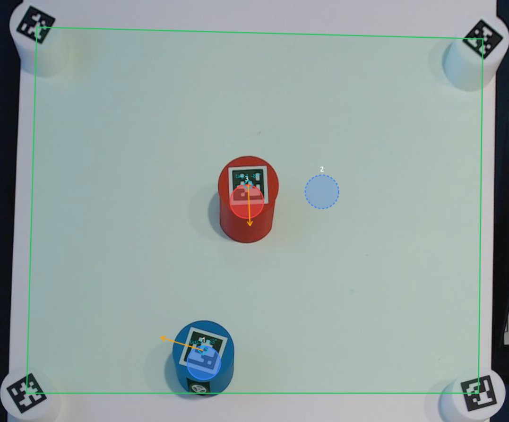

How Plato Pod is built.
Small robots, one camera, and a server that builds a world around them. Everything a student or an umpire touches goes through one interface, and any piece can be replaced without the others noticing.
The pods
Each pod is a round robot 70 mm across: a 3D-printed body split by two wheel slots, a custom circuit board with an ESP32-S3, two geared motors with wheel encoders, and a small lithium battery charged over USB-C. A marker printed on the lid is how the camera finds it.
The pod does little thinking of its own, on purpose. It takes wheel commands over Bluetooth, closes a speed loop on its encoders, and stops if no command arrives for 600 ms. The intelligence lives on the server, where it can be read, changed and tested.




Seeing the arena
One overhead camera reads the marker on every pod and turns it into a position and a heading in metres, many times a second. Four more markers sit on the corners. The arena is fitted from their geometry rather than from which marker is where, so they go down in any order, and the arena re-fits itself when one is moved.
From the same picture the console draws a top-down view at a constant scale, so what the camera sees at an angle can be read like a map.


A world around the pods
Physical pods and virtual units read the same world, and scenario logic cannot tell them apart. The server simulates what the robots carry and what surrounds them.
- SensorsEleven, simulated: gas with a real detector's lag, GNSS in metres or latitude and longitude, sonar, radar, lidar, thermal, rangefinder, IED detector, direction finding, UAV camera and friend-or-foe. Each pod's set, and each sensor's noise, can be changed while an exercise runs.
- EngagementEvery shot resolved against weapon, line of sight, cover and the target's armour. Damage slows a unit and degrades its fire, however it is driven.
- Rules and adversaryRules of engagement checked before a round resolves, and an opposing force that patrols, observes, engages and withdraws on its own.
- UmpireGas releases, wind shifts and strikes injected mid-exercise, seen at once by sensors and maps.
- SafetyWhatever drives it, a pod will not leave the arena, cross a declared obstacle or drive into another robot.
One interface, any language
Everything a client does — drive a pod, read a sensor, receive an engagement, inject an umpire event — travels over one WebSocket as JSON, so code in any language can use the arena. A small Python library wraps it for students. Inside the server, the parts exchange typed ROS 2 messages, so any of them can be rewritten in Python, C++, MATLAB, Rust or Java. The exercise also reaches ATAK over Cursor on Target.
How it is run
- ServerROS 2 Jazzy and Python, in Docker on an ordinary x86 PC. A GPU is used when present and never required.
- ConsoleA web page: nothing to install.
- TestsOver two thousand unit tests, and a suite that launches the whole system and drives it the way clients do.